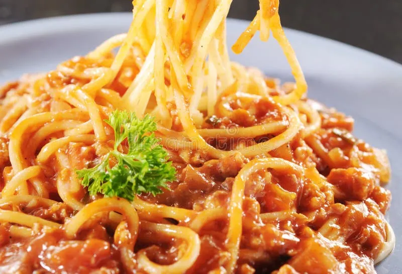
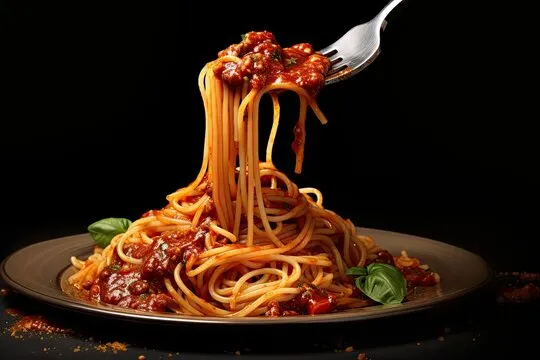

Spaghetti

Description
A hearty Italian classic featuring al dente spaghetti tossed in a rich, slow-simmered beef and tomato sauce.
Ingrediants
- 400g spaghetti
- 400g ground beef
- 1 medium onion, finely diced
- 2 cloves garlic, minced
- 1 can (400g) crushed tomatoes
- 2 tbsp tomato paste
- 2 tbsp olive oil
- Salt, black pepper, and dried oregano to taste
- Freshly grated Parmesan cheese
Steps
- Heat olive oil in a large skillet over medium heat, add the diced onion and minced garlic, and sauté until translucent.
- Add ground beef, breaking it up with a spoon, and cook until fully browned.
- Stir in tomato paste, crushed tomatoes, oregano, salt, and black pepper. Lower heat and simmer for 20 minutes.
- Bring a large pot of salted water to a boil, add spaghetti, and cook until al dente.
- Drain pasta, toss directly with the sauce, and serve hot topped with grated Parmesan.

Back home